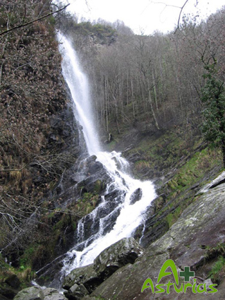

Im westlichsten Abschnitt von Asturien an der Grenze zu Galicien liegt die Region Oscos-Eo. Eindrucksvolle Wälder, friedliche Täler und Dörfer, die noch ihre traditionelle Bauweise mit Schiefer als Hauptmaterial bewahren.

• Taramundi: Ort der Eisenkultur.
- “Os Teixois”: Dieser ethnographische Komplex ist ein lebendiges und interaktives Museum, in dem die herkömmlicher Mauerwerksbauweise aus Schiefer noch beibehalten wird, ohne Last auf den Mauern und mit Schiefer gedeckt. Der Komplex verfügt über ein kleines Elektrokraftwerk, das zu Beginn des 20. Jh. erbaut wurde und dessen Schlägel, Mühle und Schleifstein noch in einwandfreiem Zustand sind.
- Die berühmte Taschenmesser aus Taramundi: Besuch einer traditionellen Werkstatt.
- La Casa del Agua, in Bres: in der die Zusammenhänge zwischen den verschiedenen Kulturen und der Dynamik des Wassers über die Jahrhunderte hinweg aufgezeigt wird.
- Das Museo de los Molinos de Mazonovo: ein Völkerkundemuseum, in dem wir alte, einfache Geräte und die mit diesen in Zusammenhang stehenden Tätigkeiten kennenlernen können.
• Santa Eulalia de Oscos:
- Im Geburtshaus des Marquis von Sargadelos befindet sich eine Ausstellung seiner Werke aus Eisen und Steingut.
• Villanueva de Oscos:
- Den Ort Villanueva de Oscos prägt das mittelalterliche Kloster Santa María (Kulturerbe).
• Die Altstadt von Castropol.

Ort trail